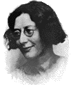

 Simone Weil nace en 1909 en París, de familia judía, intelectual y laica: su padre era un médico famoso y su hermano mayor, André, es un matemático brillante y precoz.
En su adolescencia estudia intensamente filosofía y literatura clásica. A los 19 años ingresa, con la calificación más alta (seguida por Simone de Beauvoir) a la Ecole Normale Superiore, se gradúa a los 22 y comienza su carrera docente.
Sus estudios apasionados -y críticos- de la doctrina marxista le acarrean notoriedad, y a los 23 años es 'transferida' del liceo por encabezar a una demostración de obreros desempleados. Un diario conservador la apoda 'la virgen roja', por su extraña combinación de preocupaciones por la situación social y por la pureza y la verdad. No tiene, sin embargo, convicciones religiosas. Las disputas con los superiores de los liceos se suceden, por cuestiones políticas y metodología docente. Conoce a Trotzky, con quien discute sobre la situación rusa, Stalin, y la doctrina marxista.
A los 25 años pide una licencia y va a trabajar durante más de un año, junto a los obreros, como operaria manual en varias fábricas (Renault) ("Allí recibí la marca del esclavo"). Se acrecientan sus sufrimientos físicos (sinusitis crónica), y sus padres la llevan a Portugal, en unas breves vacaciones, para intentar recuperar su salud perdida. Allí presencia un procesión católica popular, en una aldea pobre, un noche a orillas del mar; "tuve de pronto la certeza de que el cristianismo es por excelencia la religión de los esclavos, que los esclavos no podían dejar de seguirla...y yo entre ellos".
Después de un breve retorno a la docencia, en 1936 participa en la Guerra Civil Española, junto a grupos anarquistas. Un accidente la obliga a volver a Francia. De la guerra, le queda el sentimiento de horror por la brutalidad y el desprecio por la verdad y el bien, por ambas partes; y, posteriormente, la amistad con otro escritor francés, Georges Bernanos, que había participado en el otro bando. En 1937 visita Italia, y en una capilla de Asís se siente impulsada a arrodillarse, por primera vez en su vida.
Su salud empeora, tiene dolores de cabezas agudos y continuos. En la pascua de 1938 asiste a los oficios religiosos en la abadía de Solesmes. El cristianismo ocupa un lugar preponderante en sus pensamientos; tiene alguna experiencia mística, a la que prefiere resistir; se niega a rezar, o a considerar siquiera "la cuestión del bautismo". Encuentra resonancias cristianas en Homero, Platón, el Bhagavat-Gita.
Es el año 1940, Hitler está en su apogeo y su condición de judía comienza a ocasionarle problemas.
En Marsella, a los 31 años, conoce al sacerdote dominico J. Perrin, quien la ayuda a encontrar trabajo manual en la granja de Gustave Thibon, escritor católico (junio de 1941). Con el p. Perrin se plantea el tema de su bautismo, pero, a pesar del aliento del sacerdote, Simone se resiste. Sus razones y sus dudas, expuestas en cartas y notas, aparecerán más tarde en los libros "Espera de Dios" y "Carta a un religioso". Con Thibon, pese a un comienzo difícil, ("los primeros contactos fueron penosos, no coincidíamos en casi nada... yo tenía que armarme de paciencia y cortesía ", dirá él más tarde), se entabla una amistad breve, pero importante: a él confiará ella sus libros de notas, antes de partir, en mayo de 1942, a Nueva York con su familia. Thibon, por su parte, será uno de sus más fervientes admiradores ("nunca he dejado de creer en ella" ... "no he encontrado jamás en un ser humano semejante familiaridad con los misterios religiosos; jamás la palabra sobrenatural me ha parecido tan llena de sentido como a su contacto" ) y quien, a su muerte, editará una compilación de sus notas, bajo el título "La gravedad y la gracia". Este libro, junto con "Espera de Dios", son sus obras más notables.
Simone, una vez en Nueva York, trata de unirse al movimiento de la resistencia: viaja a Londres e intenta ingresar a Francia como combatiente, pero sólo logra un puesto en la organización Francia Libre, donde redacta informes. En abril de 1943 se le diagnostica tuberculosis. En el hospital, se niega a consumir los alimentos que su estado requerían, y muere el 24 de agosto, a los 34 años. Es sepultada en Kent.
En esos momentos, es prácticamente desconocida. Pocos rastros quedan de su limitada notoriedad en la década del 30, como intelectual de izquierda. No ha publicado ningún libro y se ha mantenido apartada de los círculos literarios. Al fin de la guerra, sus amigos comienzan a editar sus escritos; además de los nombrados, se destacan "La opresión y la libertad", escrito en 1934, notabilísima muestra de su evaluación del marxismo y su filosofía política general, de la que nunca se retractó; "Las raíces del existir", "La fuente griega" son otras de sus obras. Desde entonces, Simone Weil ha atraído la atención de muchísimos literatos, filósofos, teólogos y sociólogos. Intelectuales como Albert Camus y T. S. Eliot le profesan una enorme admiración. Su lucidez, honestidad intelectual y desnudez espiritual constituyen una combinación rara, e inolvidable para todos los lectores, de diversas tendencias de pensamiento, que han se han alimentado de su obra.